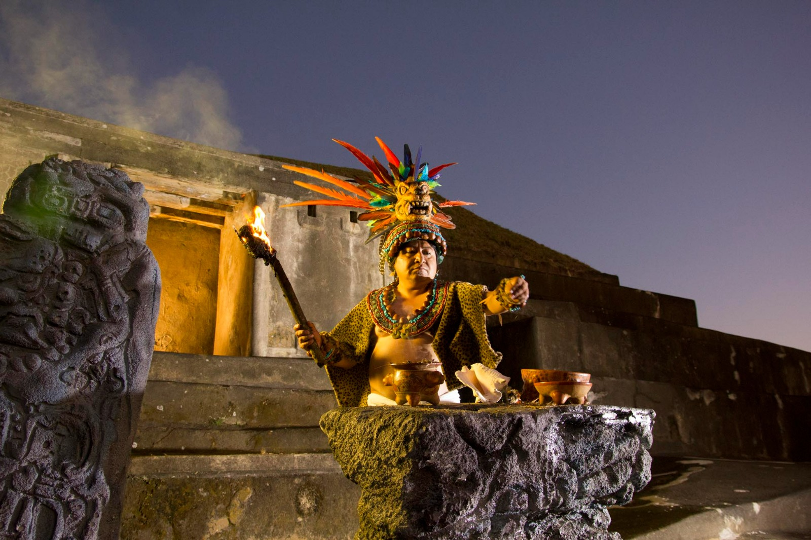

Uno de los sitios arqueológicos más importantes
Tazumal es uno de los complejos arqueológicos mayas más importantes de El Salvador. Se encuentra en la ciudad de Chalchuapa, en el departamento de Santa Ana, y forma parte de una región que fue habitada por diferentes culturas mesoamericanas durante muchos siglos.
El sitio comenzó a desarrollarse alrededor del año 100 d.C. y alcanzó su mayor importancia entre los años 600 y 900. Durante ese período se construyeron templos, plataformas y estructuras ceremoniales que servían para actividades religiosas y sociales.
Actualmente Tazumal es un destino turístico y arqueológico muy visitado, donde los visitantes pueden conocer más sobre la historia prehispánica del país y observar de cerca las antiguas construcciones mayas.
